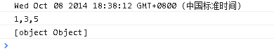
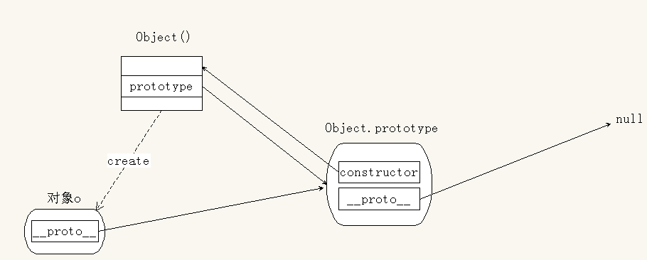

面向对象的概念
一种编程思想。
核心：在解决任何问题的时候，首先试图去找到一个对象来帮助解决问题。
好处：
- 是调度者
- 代码灵活度高
- 可维护性高
- 可扩展性高
坏处：
- 可能造成代码的复杂度提高
- 可读性相对不好
面向过程：
- 是执行者
- 一般情况下顺序不可打乱，从上至下一步一步执行
Javascript 语言的特点
- 弱类型
- 多范式
- 基于对象的语言：在 js 中，一切都是对象
- 基于原型的
原型
概念：所谓原型就是一个函数的prototype属性所引用的对象，只要声明一个函数，原型就存在。
|
|
当通过该函数创建出来的每一个对象，都共享此原型，也就是说上述所创建出来的所有对象都可以直接访问到原型上的任何成员（属性和方法）。
|
|
原型的本质：就是对象
原型的好处：实现同类对象的数据共享。
获取原型的方式：
- 通过函数：
<fnName>.prototype - 通过对象：
<object>.__proto__
|
|
获取构造函数：原型通过constructor属性获取到构造函数
|
|
对象的组成部分：
- 对象本身
- 它的原型
每个对象都有__proto__属性。就是说，每一个对象都有原型
对象类型：就是他构造函数的名字
原型属性：站在函数的角度，原型可以被称为该函数的原型属性
原型对象：站在对象的角度，原型可以被称为该对象的原型对象
__proto__是非标准属性，有兼容性问题
|
|
标准构造函数的写法：
哪些属性要保留在构造函数内部，哪些属性要提取出来，放到原型上？
- 和具体的某个对象息息相关的属性，这些属性都要写在构造函数内部
- 每一个对象都具有的属性，并且属性值是确定的，不会随对象变化而变化。
- 一般情况下所有的方法都应该放在原型上。
不提倡在 js 原生对象上进行扩展成员。会导致原生对象过于庞大、累赘，影响性能。
|
|
原型的动态特性：
- 动态性：
- 给原型扩展成员会直接反映到已创建的对象身上
- 替换原型对象不会反应到已创建出来的对象，但是会直接影响到之后创建出来的对象
- 唯一性：
由同一函数创建出来的所有对象，共享同一个原型对象 - 不可变性：
对象是无法改变原型对象上的任何成员 - 继承性：
所有对象都继承自它的原型对象
面向对象的三大特性
1. 封装：
概念：将复杂的实现过程包装隐藏起来，然后提供给用户使用的接口即可。
好处：实现代码复用，还具有私密性。
实际使用：只要出现重复代码逻辑，那么就要考虑封装成一个函数。如果该函数和一些变量的关联性比较大，那么就可以将这些变量和该函数封装成一个对象。
注意：保持函数或对象功能的单一性，便于日后维护。
2. 继承：
在 js 中，继承是对象与对象之间；
在 js 中，构造函数可以被当作是类
其他面向对象语言： C# JAVA Object-C swift C++ 建立在类与类之间的继承
实质：构造函数和类都是实例化对象的模板
概念：就是指一个对象有权去访问另一个对象的成员。通俗的说就是自己没有，别人有，通过某种方式去使用别人的方法（属性）的拿来主义
在 js 中，只要让一个对象去访问领一个对象的成员，就必须建立继承关系。
任何对象都继承他自己的原型对象。
继承的实现
两种常用模型
基于原型
扩展原型：在原有的原型上进行相应的扩展，实现继承。
123456function A(){}var a = new A();A.prototype.printA = function(){console.log("a");'}a.printA();置换原型：将要被继承的对象直接替换掉原有的原型实现继承。
12345678910111213function parent(){this.name = "parent";}parent.prototype.printC = function(){console.log("c");console.log(this.name);};function child(){}child.prototype = new parent();var c = new child();c.printC();
拷贝继承：将别的对象上的所有成员拷贝一份，添加到当前对象本身。
|
|
在实际开发中上述两种继承方式可以组合起来使用
extend方法 为了方便实现拷贝继承
一次只能继承一个对象
12345678910111213var child = {};child.extend = function(parent){for(var k in parent){this[k] = parent[k];}};child.extend({name:"child",print:function(){console.log(this.name);}});child.print();一次继承多个对象
1234567891011121314151617181920212223var child = {};child.extend = function(){var args = arguments,obj;//遍历arguments上的所有对象，依次将遍历的每个对象的成员添加到childfor(var i = 0,l = args.length;i<l;i++){obj = args[i];//判断传入的是否为对象，不是对象就执行下面的代码if(typeof obj === "object"){for(var k in obj){this[k] = obj[k];}}}};child.extend({name:"child"},{print:function(){console.log("I am "+this.name);}});child.print();ES5 Object.create ：通过置换原型的方式来实现继承
Object.create(parent); 返回一个新的对象，并继承自parent对象。
用法：var newObject = Object.create(parent)
|
|
解决兼容性问题：
|
|
- 对象冒充：
概念：在一个构造函数中，可以动态的添加一个parent方法指向已有的构造函数，然后调用parent方法去实例化当前对象的一部分成员（或全部成员），这种方式被称为对象冒充。
注意：利用完parent属性之后记得删除该属性。
|
|
3. 多态：
体现在继承中的概念。对象A继承自对象B，B对象的某个方法在A中并不适用，然后A对象重写该方法，那么这就是多态
概念：在父类中的同一方法在各个子类中的实现行为不同。
例：toString()

原型链
概念：从当前对象到Object.prototype之间，存在一条层次分明，逐级递进的体现继承关系的链式结构，这个结构被称为原型链。
核心：__proto__
几个默认
- 所有对象都有__proto__属性，这个属性引用他的原型对象
- 原型对象继承自Object.prototype，具有constructor属性，如果置换了原型，记得要添加constructor属性
- 只有函数具有prototype属性（Function.prototype除外）
属性搜索原型：当访问对象成员时，
- 首先，在当前对象上查找，如果找到就直接返回（调用），停止查找；
- 如果没有找到，就向其原型对象上查找，如果找到就直接返回（调用），停止查找；
- 如果没有找到，就继续向原型对象的原型对象上查找，直到Object.prototype；
- 如果找到，那么就直接返回（调用），并停止查找；否则返回undefined（报错：XXX is not a function）
注意：
- 如果访问对象的某个属性不存在的话，会搜索整个原型链。导致 js 性能降低
- 在实际开发中，尽量保持一个适度的原型链长度
- 兼顾 js 性能以及代码的可读性可扩展性
|
|
Object.prototype简介
console.log(Object.prototype); 介绍打印出来的几个属性
- hasOwnProperty()
has：有
own：自己
Property：属性
判断指定的属性是否为当前对象自己的（不是继承）
语法：<object>.hasOwnProperty('propName')123var o = {name:"Tom"};console.log(o.hasOwnProperty("name"));console.log(o.hasOwnProperty("toString"));
- isPrototypeOf
is：是否
prototype：原型
of：的
判断当前对象是否为指定对象的原型对象
只要对象a出现在对象b的原型链上就返回true，否则返回false
语法：<a>.isPrototypeOf(<b>)12345678910function A(){}function B(){}var a = new A();B.prototype = a;var b = new B();//原型链：b->B.prototype->A.prototype->Object.prototype->nullconsole.log(a.isPrototypeOf(b));console.log(A.prototype.isPrototypeOf(b));console.log(Object.prototype.isPrototypeOf(a));console.log(Object.prototype.isPrototypeOf(b));
- propertyIsEnumerable
property：属性
is：是否
Enumerable：可枚举的
判断对象的制定属性是否可枚举，并且指定的属性必须是自身的
是hasOwnProperty的升级版
默认：手动添加的属性都是可枚举的，js 解析器自动添加的属性都是不可枚举的1234567var obj={name:"Tom",age:18};for(var k in obj){console.log(k)}
构造函数的执行过程
- 创建了一个空对象obj
- 将obj赋值给this（让this指向obj）
- 将当前作用域交给this
- 执行构造函数的内部代码
- 将this返回（return this）
|
|
绘制原型链
规则：
- 绘制出简化的原型莲
- 先将上述简化的原型链上的每一个对象绘制在图形上
- 将每一个对象的默认属性添加上
- 给每一个对象的属性添加指向
- 如果每一个对象的属性都有了指向，就说明原型链绘制完成
|
|

|
|
Function 的介绍
创建函数的方式
声明式
1234function foo(){console.log(arguments);}foo(1,2,"3",{name:"Tom"});表达式
1234var foo = function(){console.log(arguments);}foo(1,2,"3",{name:"Tom"});构造函数
Function(arg1,arg2,…argN,body)所有参数均为字符串
arg1,arg2,…argN 为可选的参数列表，表示为生成函数的形参列表
body 为必选参数，表示为生成函数的函数体部分
- 由于函数也可以通过Function构造函数来创建，那么函数也是对象，具有proto属性1console.log(!!foo.__proto__);
函数的原型链
相关结论：
- 所有的函数都是Function实例1234567console.log(Object.constructor);console.log(Array.constructor);//Array->Function.prototype->Object.prototype->nullconsole.log(Date.constructor);console.log(RegExp.constructor);var foo = function(){};console.log(foo.constructor);
- 所有函数的构造函数为Function
- 所有函数的原型对象为Function.prototype12345console.log(foo.__proto__);console.log(Object.__proto__);console.log(Array.__proto__);console.log(Date.__proto__);console.log(RegExp.__proto__);
将函数称为函数对象
将其他对象称为普通对象
arguments对象属性
- length：实参个数
- callee：返回正在执行的函数
函数相关属性 - caller：返回调用当前函数的函数
- length：形参的个数
- name：存储函数的名字
模拟函数重载
在 js 中，没有函数重载，只能通过arguments对象进行模拟
实例：
如果函数没有传递实参，就直接打印false
如果传递一个实参，就将其直接打印出来
如果传递一个实参并且类型为数字的话，就加1再打印
如果传递两个实参，就将两个实参拼接起来，再打印出来
函数递归
- 概念：函数调用自身
经典递归案例
等差数列第n项值
12345678910111213//v为第一项的值，d为等差，n为第n项值function dengCha(v,d,n){if(n<1){return undefined;}else if(n==1){return v;}else{return dengCha(v,d,n-1)+d;}}console.log(dengCha(2,2,6));fibonacci 数列第n项值
fibonacci数列：1，1，2，3，5，8，13，21，34，…
方法一：123456function fibonacci(n){if(n<1) return undefined;else if(n===1||n===2) return 1;else return fibonacci(n-1)+fibonacci(n-2);}console.log(fibonacci(6));方法二：
123456var fibonacci = (function(n){if(n<1) return undefined;else if(n===1||n===2) return 1;else return arguments.callee(n-1)+arguments.callee(n-2);}(6));console.log(fibonacci);
词法作用域
规定变量的作用域是由变量声明的位置决定，而不是使用变量的位置决定
在词法作用域中，只有函数可以分割作用域，在函数内部是一个完整作用域，与外界隔离。
在函数内部可以访问函数外部的数据；但是在函数外部无法访问内部的数据。
变量名（函数名）提升
在 js 预解析阶段执行的操作
js 本身是边解析边执行的
在预解析阶段
首先分析代码语法，如果有语法错误，就直接抛出异常
其次，将变量名以及函数声明提升到当前作用域最顶端
in 运算符
规则：前面的属性名字要用字符串来表示；如果为变量，那么会将变量的值隐式转换成字符串，然后去判断变量的值是否为指定对象的属性（可以为继承过来的属性）
注意：后面的参数必须为对象，否则报错